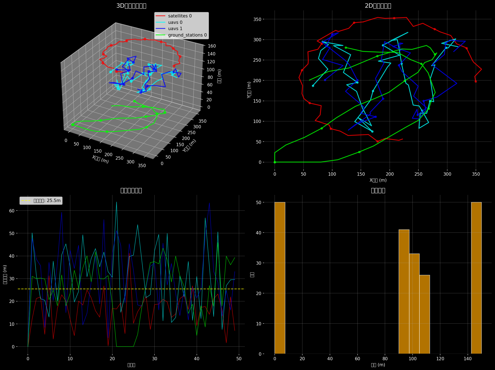
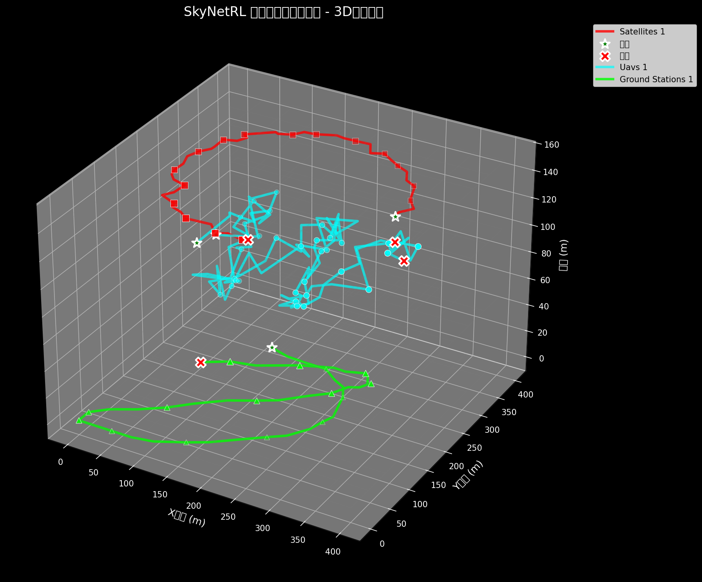
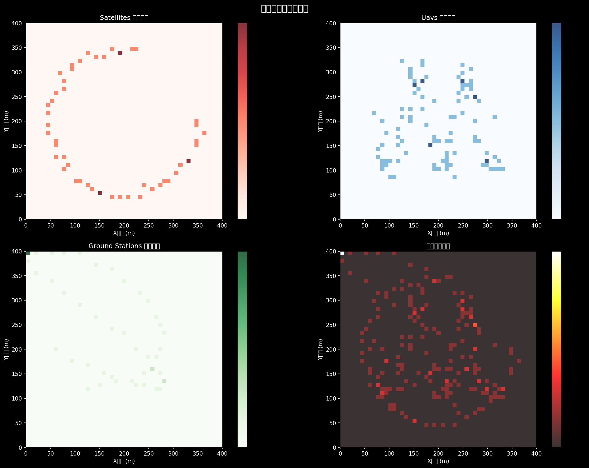
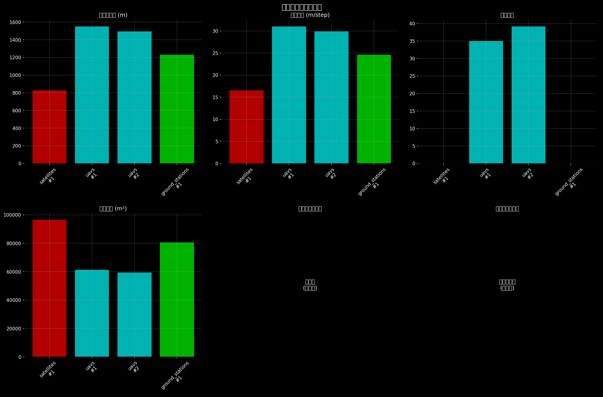

📊 深度分析 • 🎬 动态可视化 • 🗺️ 3D轨迹遗迹
数量: 1 个
运行高度: 140-160m
轨迹颜色: ● #ff4444
轨迹特点: 50点历史追踪，渐变透明度显示时间演化
数量: 2 个
运行高度: 90-110m
轨迹颜色: ● #44aaff
轨迹特点: 50点历史追踪，渐变透明度显示时间演化
数量: 1 个
运行高度: 0-10m
轨迹颜色: ● #44ff44
轨迹特点: 50点历史追踪，渐变透明度显示时间演化

显示智能体移动模式、距离统计和高度分布

立体展现智能体运动轨迹，包含起点、终点和历史路径

显示智能体活动热点区域和访问频率分布

不同智能体类型的性能指标对比和综合评估
24 FPS 电影级帧率
告别PPT式卡顿，享受丝滑动画体验
50点历史轨迹
实时显示智能体运动历史遗迹
三维空间可视化
智能体高度分层，立体感十足
动态覆盖+通信链路
实时显示覆盖范围和智能体通信
时间演化透明度
历史轨迹渐变显示，时间感强烈
150 DPI 专业质量
2400×1800分辨率，细节清晰可见
分辨率: 2400×1800
帧率: 24 FPS
DPI: 150
Episode视频: ~11MB
概览视频: ~1MB
总计: ~23MB
历史长度: 50点
更新频率: 每步
透明度: 渐变
轨迹历史遗迹可视化系统已完美实现！
从原来的"PPT式卡顿"到现在的"电影级流畅"， 从"平面单调"到"3D立体丰富"， 从"看不见轨迹"到"50点历史追踪"， 智能体运动模式现在一目了然！
🎯 轨迹历史遗迹清晰可见，智能体协作关系生动展现！